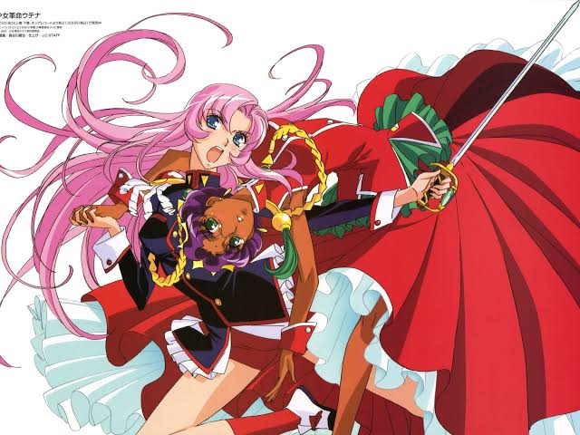

About Utena
Utena is the main protagonist of the Revolutionary Girl Utena Series. After meeting a mysterious prince as a lost child, she wants to become a prince herself instead of being rescued.

Utena and Anthy Himemiya
Utena’s charateristics
- She’s passionate
- She’s courageous
- She’s loyal
- She is naive but resilient